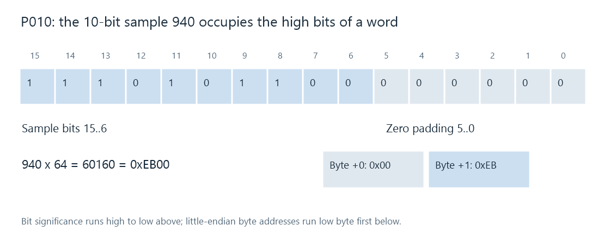

P010 Pixel Format
P010 stores 10-bit 4:2:0 video in 16-bit words, with a luma plane and an interleaved Cb/Cr plane.

P010 gives every 10-bit component sample a 16-bit storage word. The ten meaningful bits occupy bits 15 through 6, with the low six bits zero in the defined representation. In the little-endian P010 layout described here, the low byte is stored first.
For the illustrated sample 940, shifting the sample left by six positions gives 940 × 64 = 60,160 = 0xEB00. Its two bytes, in increasing address order, are 0x00, 0xEB.
A processing format for ten-bit values
P010 and a fully planar 10-bit format can represent equivalent component values while organizing and aligning their bits differently. A conversion between them moves and places the values correctly. It does not need to reduce their ten-bit precision.
In an Emby processing description, P010 can identify a working surface used after decoding or between filters and an encoder. It describes the sample layout at that boundary. The color description establishes whether those samples represent SDR, PQ, HLG, or another intended interpretation. Those properties together determine the next stage's reading and processing of the picture.
Sample numbers and stored words
| 10-bit sample value | Stored 16-bit word | Bytes, low address first |
|---|---|---|
| 64 | 4,096 = 0x1000 | 00 10 |
| 512 | 32,768 = 0x8000 | 00 80 |
| 513 | 32,832 = 0x8040 | 40 80 |
| 940 | 60,160 = 0xEB00 | 00 EB |
These codes include common limited-range black, neutral chroma, and nominal white values. The example 513 also shows that increasing the sample by one increases its stored word by 64, not one.
Reading a P010 word as an ordinary unshifted 10-bit sample consequently produces the wrong value. A CPU reader of this defined representation obtains the code by shifting the word right by six. The value's range interpretation is a subsequent calculation.
Two planes, wider elements
P010 retains the semiplanar organization familiar from NV12: all Y samples in one plane and interleaved Cb/Cr samples in another. For an even W × H picture, each chroma component has W/2 × H/2 samples.
A 4 × 2 picture has eight Y words and four chroma words, or 24 active bytes. With a tight 8-byte pitch, Y rows start at offsets 0 and 8; the interleaved chroma row starts at 16. Its Cb0, Cr0, Cb1, Cr1 words start at byte offsets 16, 18, 20, and 22.
The active byte width of a Y row is 2W. A chroma row holds W/2 pairs, each four bytes, so its active width is also 2W. Padding or extra allocated rows can enlarge a real surface; the API's supplied strides and offsets describe that allocation.